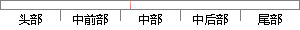

当任务进入休眠后，就处于休眠态，当任务被挂起后就进入等待态，被中断的任务处于中断态。
片段位置图

相似结果
相似片段：被中断的任务被挂起,高优先级的任务开始运行,这...任务状态一般分为就绪态、运行态和等待态。在多任务...处于运行态的任务会在任意时刻由运行态进入休眠态、...
| 标题 | 《实时嵌入式操作系统内核的研究与实现》 |
| 对比库 | 中国学位论文全文数据库 |
| 作者 | 张虎 |
| 机构 | 五邑大学 |
| 分类 | 计算机应用技术 |
| 年份 | 2008 |
| 相似率 | 100% （严重抄袭） |
※ 片段修改建议 ※
近似词参考：- 任务：使命 义务
- 等待：期待 守候 等候
- 中断：间断 中止 停止
系统自动生成语句：当使命进入休眠后，就处于休眠态，当使命被挂起后就进入期待态，被间断的使命处于间断态。
注：本片段修改建议为系统自动生成，仅供参考。